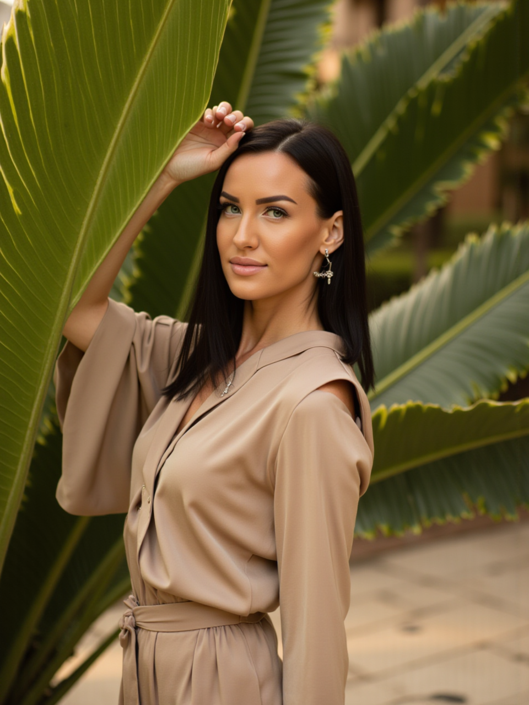

✧Основная программа
Осознанный выход из Матрицы
Глубокий маршрут для тех, кто хочет перестать жить из автоматических сценариев, вернуть контакт с истинным Я и собрать новую опору внутри себя.
от 300 000 ₽
Атмика помогает душам всех возрастов проснуться от глубокого сна, вернуть контакт с истинным сознанием и через практики самоисследования выйти из иллюзорных сценариев жизни.
Здесь нет обещания «волшебной кнопки». Есть проводник, личный мистический опыт, семь лет практики и работа с сознанием, телом, энергией и ситуациями, которые вы уже готовы увидеть глубже. Человек может выйти из автоматических программ, перестать отдавать управление страху и начать проживать реальность из гармонии, ясности и внутреннего присутствия.
Глубокий маршрут для тех, кто хочет перестать жить из автоматических сценариев, вернуть контакт с истинным Я и собрать новую опору внутри себя.
Работа с первопричинами, внутренними блоками, повторяющимися событиями и тем, что ощущается как энергетическая тяжесть.
Практики внимания к телу, сознанию и внутренним программам для тех, кто хочет мягко перестроить контакт с собой.
Работа с восприятием тела, состоянием, жизненной энергией и внутренними настройками молодости.
Практический путь к большему равновесию, спокойствию и способности слышать собственное тело.
Древняя чистка огнём, звуковая терапия, индивидуальные и групповые форматы, трансформационные ретриты.

Чаще всего приходят с вопросом: «Что мешает мне двигаться в жизни или достичь желаемого?». В работе мы ищем не только внешнее препятствие, а внутренний источник напряжения.
Смотрим, что именно болит в жизни: ситуация, тело, отношения, страх, потеря опоры или ощущение застревания.
Работа идёт не только с поверхностным симптомом, а с тем, что стоит под ним: убеждениями, программами и энергетическим следом.
Через проводничество, медитативное состояние, внимание к телу и полю вы проходите трансформационный опыт.
После сессии важны наблюдение, бережные действия и возвращение в повседневность уже из нового состояния.
Путь Атмики начался с раннего опыта тонкого восприятия: вещих снов, астральных переживаний, контакта с невидимым и вопросов, на которые обычная логика не отвечала. Позже были обучение ясновидению, самостоятельные практики, раскрытие способностей и собственные методы работы через квантовое поле.
Сегодня этот опыт собран в практические форматы: очищение поля, работа с телом через сознание, изменение внутренних программ, самоисследование и сопровождение тех, кто готов идти глубже.
«Я помогаю душам всех возрастов достичь пробуждения истинного сознания и через практики выйти из иллюзорной матрицы.»
15 минут, чтобы обозначить запрос, почувствовать контакт и понять, какой формат сейчас подходит: сессия, программа, офлайн-практика или ретрит.